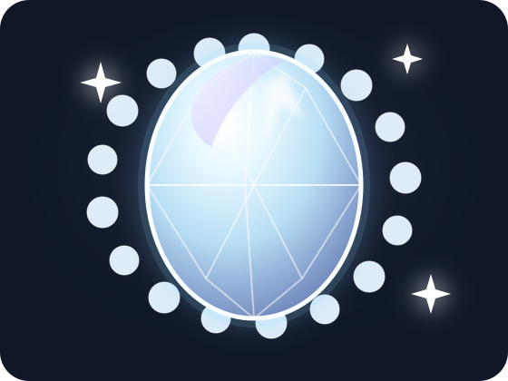

Önce kavram
Her teknik kararın nedenini kısa ve gerçek hayat odaklı bir anlatımla kuruyoruz.
On session boyunca aynı e-ticaret API'sini adım adım geliştiriyor; her kavramı çalışan kodun üzerine inşa ediyoruz.
Her oturum bir öncekinin çıktısını devralır. Bir session seçerek konu akışını ve uygulama hedeflerini görebilirsin.
Her teknik kararın nedenini kısa ve gerçek hayat odaklı bir anlatımla kuruyoruz.
Teoriyi aynı API üzerinde, gözlemlenebilir ve test edilebilir bir çıktıya dönüştürüyoruz.
Her `ref/sNN-*` branch'i ilgili session'ın tamamlanmış referans noktasıdır.
28 Temmuz 2024'te Topkapı Sarayı'nda işlenen vakayı çöz. Tanık, güvenlik, ATM, telefon ve uçuş kayıtlarını ilişkilendir; ulaştığın her sonucu veritabanındaki kanıtlarla destekle.

SELECT dışında hiçbir veri değiştirme komutuna ihtiyacın yok.
istanbul_heist.db dosyasını SQLite ile aç; olay raporundan başlayıp kayıtlar arasındaki bağlantıları bul.
Sorgularını ve araştırma notlarını log.sql, üç nihai cevabını answers.txt içinde hazırla.
Repoyu fork et, dosyalarını cevaplar/Ad-Soyad/ altına ekle ve çözümünü Pull Request ile teslim et.